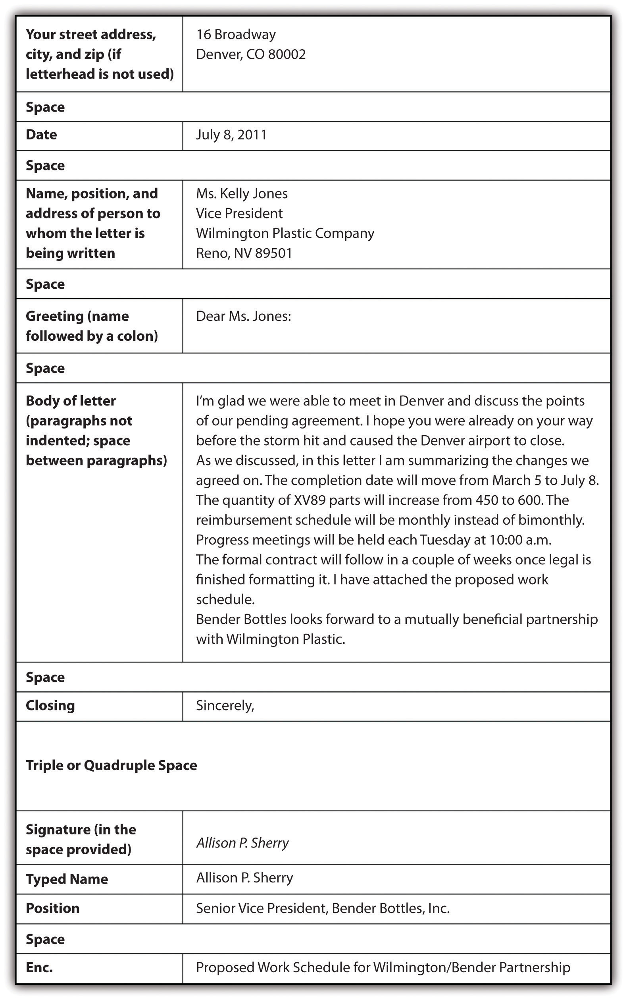

12.1 Writing Business Letters
Learning Objectives
- Recognize key parts of a business letter.
- Learn the block format of a business letter.
- Understand the professional nature of a business letter.
You might think that people living in the age of technology do not need to learn business letter skills. After all, in today’s professional world, e-mails have replaced business letters as the primary mode of communication. However, many formal situations are still best handled with business letters, whether they are sent on paper or as an attachment to an e-mail.
When writing a business letter, if you use business letterhead that includes the company address and other contact information, you do not need to incorporate that information within the letter. The most common format of business letters, the block format, uses one-inch margins with all content flush against the left margin, including the body paragraphs. Some less common forms do use indentation. Business letters include the following parts, as shown in this sample:

When writing a business letter, keep these tips in mind:
- Do not use slang.
- Be professional.
- Be concise and to the point.
- Mention a personal connection, if you have one, briefly at the beginning of the letter to create a personalized introduction.
- Use the abbreviation “Enc.” or the word “Enclosed” prior to a list of papers that are included with the business letter.
- Proofread for grammar, punctuation, and spelling.
- Make sure that a letter attached to an e-mail is in a document format that your recipient also uses.
- Use a person’s name in the greeting whenever possible. If you have no way of acquiring a name, use “Dear Sir or Madam” or similar generic, but professional, wording.
Key Takeaways
- The block format is the most common form of a business letter.
- Business letters, whether sent in hard copy or digitally, should include date; name, position, and address of recipient; greeting; body; closing; signature; typed name; position of sender; and enclosure list if there are any enclosures.
- Business letters should be formal in tone, concise, free of errors, and personalized at a professional level.
- Business letters are often attached to e-mails. In such cases, make certain the recipient has the necessary software to open the letter.
Exercises
- Demonstrate your understanding of business letter techniques by writing a realistic mock business letter.
- Collect a sample of business letters you receive in the mail over the next few weeks. Bring the samples to class and share them with your group; look for differences and similarities in format and tone.